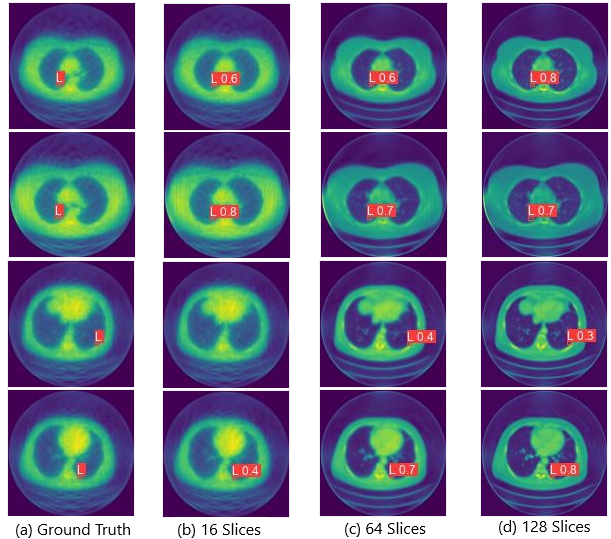

| Paper PDF |

|
Computer Tomography(CT) scans are often used to identify lesions of different types in bone, liver, lung, kidney, and soft tissues. CT scanning machines have various specifications with one distinguishing factor being the number of slices in the receiver. This slice count is a driving factor in CT machine prices. We want to find out what is the minimum number of slices in a CT scanner that retains the ability to identify lesions. Reducing the number of slices brings down cost of operation while also reducing the radiation exposure to the patients. We used sinogram reconstruction to simulate the various slice counts of 16,64, and 128. We then trained an object detection model on that data-set and determined that a 64 slice CT scanner, in terms of mean-average precision, has similar performance to that of a 128 slice CT scanner.
|
|
|
| Paper: |
Code and Data:
|